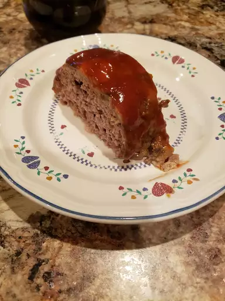

Meatloaf

Description
This slow cooker meatloaf recipe is simple and foolproof! With a sweet, sticky glaze brushed on during the last 15 minutes, every bite of this comfort-food classic is moist, juicy, and full of flavor. Throw it together at lunch, pop it in the slow cooker, and by dinner, the aroma will get your family to the table.
Ingredients
- Breadcrumbs
- Milk
- Eggs
- Seasonings
- Beef
- Mushrooms
- Love
Directions
- Whisk together milk, bread crumbs, eggs, minced onion, salt, and sage. Stir in ground beef and mushrooms. Shape the mixture into a round loaf that will fit into your slow cooker.
- Place the formed loaf into your slow cooker and cook on low for five to six hours.
- Whisk together the ketchup, brown sugar, mustard, and Worcestershire sauce. Open the slow cooker and pour the glaze evenly over the loaf. Re-cover and continue to cook on low for about 15 more minutes.
- Remove the meatloaf and transfer to a serving plate. Cover with foil for about 10 minutes to trap in the juices, then slice and serve